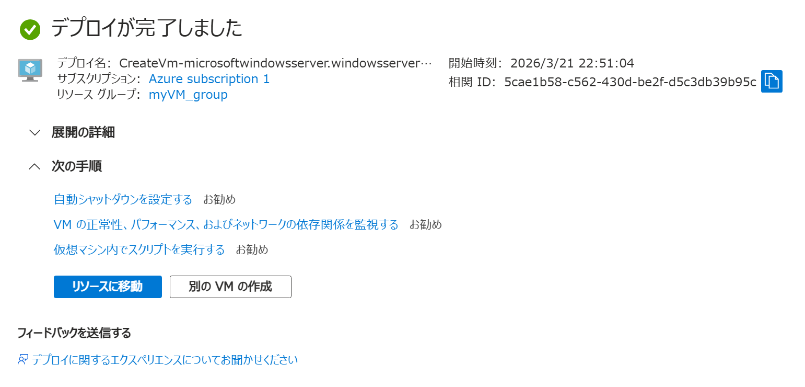
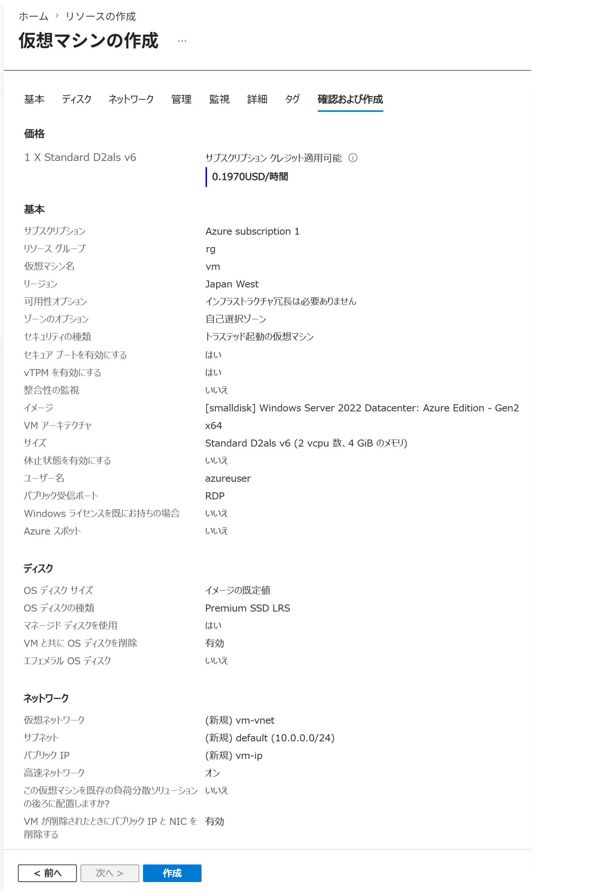
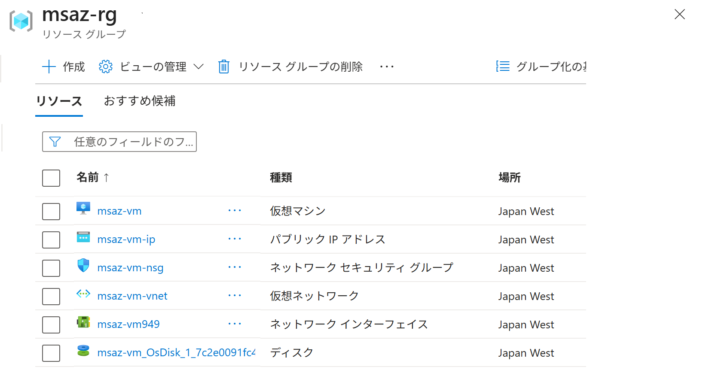

Azure ポータルで 仮想マシンを作成する（Windows）
適用対象: ✔️ 仮想マシン
この演習では、Azure ポータルを使用して 仮想マシンを作成します。
仮想マシンは IaaS (Infrastructure as a Service) に分類されるサービスです。
所要時間: 約 20 分
先行の演習
この演習を始める前に リソースグループを作成する を完了してください。
仮想マシン
仮想マシンは、物理マシン上にソフトウェアで作られるコンピューターです。
物理マシンの CPU やメモリなどを割り振って動作し、実物のコンピューターのように利用できます。
物理マシンの資源を共有して動作するため、1台の物理マシン上に複数の仮想マシンを作成できます。

タスク 1: 仮想マシンの作成
仮想マシン（Virtual Machine）を作成します。
仮想マシンを作成する際、関連するリソースも同時に作成する必要があります。
- ポータルメニューから [仮想マシン] を選択します。
- [＋ 作成] を選択します。
- [仮想マシン] を選択します。
- 基本 タブで、以下の設定値を入力または確認します。指定のない項目はデフォルトのままにします。

設定 値 サブスクリプション 任意 リソース グループ msaz-rg仮想マシン名 msaz-vmリージョン [(Asia Pacific) Japan West] など 可用性オプション [インフラストラクチャ冗長は必要ありません] セキュリティの種類 [トラステッド起動の仮想マシン] イメージ [[smalldisk] Windows Server 2022 Datacenter: Azure Edition - x64 Gen 2] サイズ [Standard_D2als_v6 ...] など ユーザー名 azureuserパスワード Password123!などパブリック受信ポート [RDP (3389)] - [次： ディスク ＞] を選択します。
- ディスク タブで、設定項目を一通り確認します。設定値はデフォルトのままにします。
- [次： ネットワーク ＞] を選択します。
- ネットワーク タブで、以下の設定値を入力または確認します。指定のない項目はデフォルトのままにします。
ネットワーク インターフェイスが 仮想マシンと同時に作成されます。
ネットワーク インターフェイス用のネットワーク セキュリティ グループが 仮想マシンと同時に作成されます。設定 値 仮想ネットワーク [(新規) msaz-vm-vnet] サブネット [(新規) default (10.0.0.0/24)] パブリック IP [(新規) msaz-vm-ip] NIC ネットワーク セキュリティ グループ [Basic] パブリック受信ポート [選択したポートを許可する] 受信ポートを選択 [RDP (3389)] VM が削除されたときにパブリック IP と NIC を削除する [☑️] - [次： 管理 ＞] を選択します。
- 管理 タブで、設定項目を一通り確認します。設定値はデフォルトのままにします。
- [次： 監視 ＞] を選択します。
- 監視 タブで、設定項目を一通り確認します。設定値はデフォルトのままにします。
- [次： 詳細 ＞] を選択します。
- 詳細 タブで、設定項目を一通り確認します。設定値はデフォルトのままにします。
- [次： タグ ＞] を選択します。
- タグ タブで、設定項目を一通り確認します。設定値はデフォルトのままにします。
- [確認および作成] を選択します。
- 確認および作成 タブで、仮想マシンだけでなく、ディスクやネットワークも作成の対象になっていることを確認します。
- [作成] を選択します。
- 完了を待ちます。


タスク 2: 作成されたリソースの確認
仮想マシンだけでなく、仮想マシンに関連するリソースも同時に作成されていることを確認します。
- ポータルメニューから [リソース グループ] を選択します。
msaz-rgを選択します。- リソースの一覧が表示されます。仮想マシンに関連する複数のリソースが 同じリソース グループ内に作成されたことを確認します。

名前 リソースの種類 msaz-vm仮想マシン msaz-vm-ipパブリック IP アドレス msaz-vm-nsgネットワーク セキュリティ グループ msaz-vm-vnet仮想ネットワーク msaz-vm443-z1ネットワーク インターフェイス msaz-vm_OsDisk_1_.....ディスク
タスク 3: リソースの関連付けの確認
作成されたリソースがどのように関連付けされているかを確認します。
- ポータルメニューから [リソース グループ] を選択します。
msaz-rgを選択します。- サービスメニューから [リソース ビジュアライザー] を選択します。
- 仮想マシンに関連する複数のリソースがどのように関連付けされているか確認します

- ネットワークセキュリティグループの関連付けは ネットワーク設計に応じていくつかのパターンに分類できます。ここでは、デフォルトのネットワークセキュリティグループがネットワークインターフェイスに関連付けされています。